<!--

Copyright 2017 The Royal Veterinary College, jbullock AT rvc.ac.uk, pnunn AT rvc.ac.uk

This file is part of Folium.

Folium is free software: you can redistribute it and/or modify
it under the terms of the GNU General Public License as published by
the Free Software Foundation, either version 3 of the License, or
(at your option) any later version.

Folium is distributed in the hope that it will be useful,
but WITHOUT ANY WARRANTY; without even the implied warranty of
MERCHANTABILITY or FITNESS FOR A PARTICULAR PURPOSE.  See the
GNU General Public License for more details.

You should have received a copy of the GNU General Public License
along with Folium.  If not, see <http://www.gnu.org/licenses/>.

-->
<div bsModal [config]="{backdrop: false, keyboard: false}" #signInModal="bs-modal" class="modal" tabindex="-1" role="dialog" aria-describedby="Sign in modal" aria-labelledby="signInTitle" aria-hidden="true">
  <div class="modal-dialog modal-full-screen">
    <div class="modal-content">
      <div class="modal-header sr-only">
        <h4 class="modal-title" id="signInTitle">Please sign in</h4>
      </div>
      <div class="modal-body">   
        <div class="row vertical-height-100 justify-content-center align-items-center dark-background">
            <div class="col-5 col-sm-4 col-md-3">
                <div class="preload logo">  
                </div>
                <div class="loader-container">
                    <div class="loader">Loading...
                    </div>
                </div>
            </div>
        </div>    
        <iframe class="vertical-height-100" #signInFrame id="signInFrame" align="center" width="100%" height="100%" frameborder="0" marginheight="0" marginwidth="0"></iframe>
      </div>
    </div>
  </div>
</div>